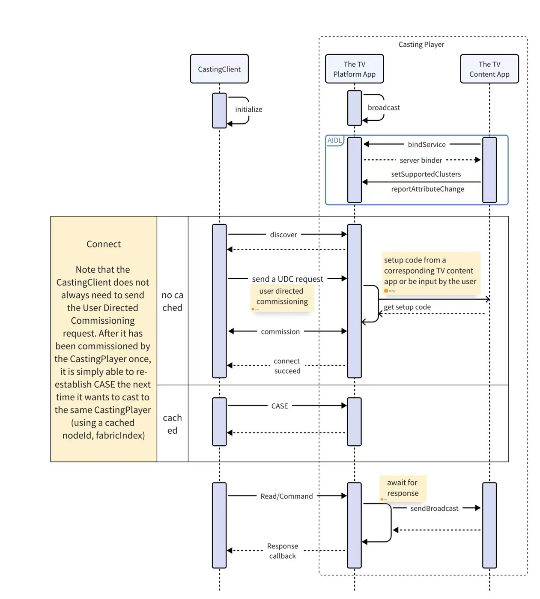

Matter Casting APIs#
Matter Casting consists of three parts:
The mobile app: For most content providers, this would be your consumer-facing mobile app. By making your mobile app a Matter “Casting Client”, you enable the user to discover casting targets, cast content, and control casting sessions. The example Matter tv-casting-app for Android / iOS and Linux builds on top of the Matter SDK to demonstrate how a TV Casting mobile app works.
The TV content app: For most content providers, this would be your consumer-facing app on a Smart TV. By enhancing your TV app to act as a Matter “Content app”, you enable Matter Casting Clients to cast content. The example Matter content-app for Android builds on top of the Matter SDK to demonstrate how a TV Content app works.
The TV platform app: The TV platform app implements the Casting Video Player device type and provides common capabilities around media playback on the TV such as play/pause, keypad navigation, input and output control, content search, and an implementation of an app platform as described in the media chapter of the device library specification. This is generally implemented by the TV manufacturer. The example Matter tv-app for Android builds on top of the Matter SDK to demonstrate how a TV platform app works.
This document describes how enable your Android and iOS apps to act as a Matter “Casting Client”. This documentation is also designed to work with the example example Matter tv-casting-app samples so you can see the experience end to end.
Introduction#
A Casting Client (e.g. a mobile phone app) is expected to be a Matter
Commissionable Node and a CastingPlayer (i.e. a TV) is expected to be a Matter
Commissioner. In the context of the Matter Video Player architecture, a
CastingPlayer would map to Casting “Video” Player. The CastingPlayer is
expected to be hosting one or more Endpoints (some of which can represent
Content Apps in the Matter Video Player architecture) that support one or more
Matter Media Clusters.
The steps to start a casting session are:
Initialize the
CastingClientusing the Matter SDK.Discover
CastingPlayerdevices using Matter Commissioner discovery.Connect to the
CastingPlayerto discover available endpoints. By connecting, theCastingClientwill send a User Directed Commissioning (UDC) request to theCastingPlayerdevice in order to make a Matter commissioning request. TheCastingPlayerwill then obtain the appropriate user consent to allow a connection from thisCastingClientand obtain the setup code needed to commission theCastingClient. The setup code will typically come from a corresponding TV content app or be input by the user.Select an available
Endpointhosted by theCastingPlayer.
Next, you’re ready to:
Issue commands to the
Endpoint.Read endpoint attributes like playback state.
Subscribe to playback events.
In order to illustrate these steps, refer to the figure below

Build and Setup#
The Casting Client is expected to consume the Matter TV Casting library built
for its respective platform which implements the APIs described in this
document. Refer to the tv-casting-app READMEs for Linux,
Android
and iOS to understand how to build and consume
each platform’s specific libraries. The libraries MUST be built with the
client’s specific values for CHIP_DEVICE_CONFIG_DEVICE_VENDOR_ID and
CHIP_DEVICE_CONFIG_DEVICE_PRODUCT_ID updated in the
CHIPProjectAppConfig.h file.
Other values like the CHIP_DEVICE_CONFIG_DEVICE_NAME may be updated as well to
correspond to the client being built.
CHIP_DEVICE_CONFIG_DEVICE_VENDOR_ID and CHIP_DEVICE_CONFIG_DEVICE_PRODUCT_ID
can be obtained during the CSA certification of your mobile app. The Matter SDK
has pre-configured sample/test values for them in the
CHIPDeviceConfig.h
file.
Initialize the Casting Client#
{Complete Initialization examples: Linux | Android | iOS}
A Casting Client must first initialize the Matter SDK and define the following
DataProvider objects for the the Matter Casting library to use throughout the
client’s lifecycle:
Rotating Device Identifier - “This unique per-device identifier SHALL consist of a randomly-generated 128-bit or longer octet string.” Refer to the Matter specification for more details. Instantiate a
DataProviderobject as described below to provide this identifier.On Linux, define a
RotatingDeviceIdUniqueIdProviderto provide the Casting Client’sRotatingDeviceIdUniqueId, by implementing amatter:casting::support::MutableByteSpanDataProvider:class RotatingDeviceIdUniqueIdProvider : public MutableByteSpanDataProvider { private: chip::MutableByteSpan rotatingDeviceIdUniqueIdSpan; uint8_t rotatingDeviceIdUniqueId[chip::DeviceLayer::ConfigurationManager::kRotatingDeviceIDUniqueIDLength]; public: RotatingDeviceIdUniqueIdProvider() { // generate a random Unique ID for this example app for demonstration for (size_t i = 0; i < sizeof(rotatingDeviceIdUniqueId); i++) { rotatingDeviceIdUniqueId[i] = chip::Crypto::GetRandU8(); } rotatingDeviceIdUniqueIdSpan = chip::MutableByteSpan(rotatingDeviceIdUniqueId); } chip::MutableByteSpan * Get() { return &rotatingDeviceIdUniqueIdSpan; } };
On Android, define a
rotatingDeviceIdUniqueIdProviderto provide the Casting Client’sRotatingDeviceIdUniqueId, by implementing acom.matter.casting.support.DataSource:private static final DataProvider<byte[]> rotatingDeviceIdUniqueIdProvider = new DataProvider<byte[]>() { private static final String ROTATING_DEVICE_ID_UNIQUE_ID = "EXAMPLE_IDENTIFIER"; // dummy value for demonstration only @Override public byte[] get() { return ROTATING_DEVICE_ID_UNIQUE_ID.getBytes(); } };
On iOS, define the
func castingAppDidReceiveRequestForRotatingDeviceIdUniqueIdin a class,MCAppParametersDataSource, that implements theMCDataSource:class MCAppParametersDataSource : NSObject, MCDataSource { func castingAppDidReceiveRequestForRotatingDeviceIdUniqueId(_ sender: Any) -> Data { // dummy value, with at least 16 bytes (ConfigurationManager::kMinRotatingDeviceIDUniqueIDLength), for demonstration only return "0123456789ABCDEF".data(using: .utf8)! } ... }
Commissioning Data - This object contains the passcode, discriminator, etc. which identify the app and are provided to the
CastingPlayerduring the commissioning process. “A Passcode SHALL be included as a 27-bit unsigned integer, which serves as proof of possession during commissioning.” “A Discriminator SHALL be included as a 12-bit unsigned integer, which SHALL match the value which a device advertises during commissioning.” Refer to the Matter specification’s “Onboarding Payload” section for more details on commissioning data.For the optional
CastingPlayer/ Commissioner-Generated Passcode User Directed Commissioning (UDC) feature, the CommissioningDataProviderneeds to be updated during the commissioning process. In this scenario, theCastingPlayergenerates a Passcode and displays it for the user. The user enters the Passcode on the UX of the Casting Client which should update its CommissioningDataProvider. This allows the Matter Casting Library to run commissioning with theCastingPlayerusing a PAKE verifier based on the user-entered passcode. See the Matter specification’s UDC section for more information on the Commissioner-Generated Passcode feature.On Linux, define a function
InitCommissionableDataProviderto initialize aLinuxCommissionableDataProviderthat can provide the required values to theCastingApp.CHIP_ERROR InitCommissionableDataProvider(LinuxCommissionableDataProvider & provider, LinuxDeviceOptions & options) { chip::Optional<uint32_t> setupPasscode; if (options.payload.setUpPINCode != 0) { setupPasscode.SetValue(options.payload.setUpPINCode); } else if (!options.spake2pVerifier.HasValue()) { // default to TestOnlyCommissionableDataProvider for demonstration uint32_t defaultTestPasscode = 0; chip::DeviceLayer::TestOnlyCommissionableDataProvider TestOnlyCommissionableDataProvider; VerifyOrDie(TestOnlyCommissionableDataProvider.GetSetupPasscode(defaultTestPasscode) == CHIP_NO_ERROR); setupPasscode.SetValue(defaultTestPasscode); options.payload.setUpPINCode = defaultTestPasscode; } uint32_t spake2pIterationCount = chip::Crypto::kSpake2p_Min_PBKDF_Iterations; if (options.spake2pIterations != 0) { spake2pIterationCount = options.spake2pIterations; } return provider.Init(options.spake2pVerifier, options.spake2pSalt, spake2pIterationCount, setupPasscode, options.payload.discriminator.GetLongValue()); }
On Linux, if using the
CastingPlayer/ Commissioner-Generated Passcode UDC feature, set up a newLinuxCommissionableDataProviderwhen called back on theCommissionerDeclarationCallbackduring the VerifyOrEstablishConnection() API call (described later). TheCastingPlayergenerated passcode (as entered by the user on the Casting Client UX) should be set in thisLinuxCommissionableDataProviderwhich should then be passed to the CastingApp using theUpdateCommissionableDataProviderAPI.LinuxDeviceOptions::GetInstance().payload.setUpPINCode = userEnteredPasscode; LinuxCommissionableDataProvider gCommissionableDataProvider; CHIP_ERROR err = CHIP_NO_ERROR; err = InitCommissionableDataProvider(gCommissionableDataProvider, LinuxDeviceOptions::GetInstance()); if (err != CHIP_NO_ERROR) { ChipLogError(AppServer, "CommandHandler() setcommissionerpasscode InitCommissionableDataProvider() err %" CHIP_ERROR_FORMAT, err.Format()); return err; } err = matter::casting::core::CastingApp::GetInstance()->UpdateCommissionableDataProvider(&gCommissionableDataProvider); if (err != CHIP_NO_ERROR) { ChipLogError(AppServer, "CommandHandler() setcommissionerpasscode InitCommissionableDataProvider() err %" CHIP_ERROR_FORMAT, err.Format()); return err; }
On Android, define a
CommissionableDataProviderthat can provide the required values to theCastingApp. If using theCastingPlayer/ Commissioner-Generated Passcode UDC feature, the Casting Client needs to update thisCommissionableDataProviderduring the verifyOrEstablishConnection() API call (described later). In the example below,updateCommissionableDataSetupPasscodeupdates the CommissionableData with theCastingPlayergenerated passcode entered by the user on the Casting Client UX.public static class CommissionableDataProvider implements DataProvider<CommissionableData> { CommissionableData commissionableData = // Dummy values for commissioning demonstration only. These are hard coded in the example tv-app: // connectedhomeip/examples/tv-app/tv-common/src/AppTv.cpp private static final long DUMMY_SETUP_PASSCODE = 20202021; private static final int DUMMY_DISCRIMINATOR = 3874; new CommissionableData(DUMMY_SETUP_PASSCODE, DUMMY_DISCRIMINATOR); @Override public CommissionableData get() { return commissionableData; } // If using the alternate CastingPlayer / Commissioner-Generated Passcode UDC feature: public void updateCommissionableDataSetupPasscode(long setupPasscode, int discriminator) { commissionableData.setSetupPasscode(setupPasscode); commissionableData.setDiscriminator(discriminator); } };
On iOS, add a
func commissionableDataProviderto theMCAppParametersDataSourceclass defined above, that can provide the required values to theMCCastingApp. If using theCastingPlayer/ Commissioner-Generated Passcode UDC feature, the Casting Client needs to update thiscommissionableDataProviderduring the VerifyOrEstablishConnection() API call (described later). In the example below, theupdatefunction updates the CommissionableData with theCastingPlayergenerated passcode entered by the user on the Casting Client UX.// Dummy values for demonstration only. private var commissionableData: MCCommissionableData = MCCommissionableData( passcode: 20202021, discriminator: 3874, spake2pIterationCount: 1000, spake2pVerifier: nil, spake2pSalt: nil ) func castingAppDidReceiveRequestForCommissionableData(_ sender: Any) -> MCCommissionableData { return commissionableData } // If using the alternate CastingPlayer / Commissioner-Generated Passcode UDC feature: func update(_ newCommissionableData: MCCommissionableData) { self.commissionableData = newCommissionableData }
Device Attestation Credentials - This object contains the
DeviceAttestationCertificate,ProductAttestationIntermediateCertificate, etc. and implements a way to sign messages when called upon by the Matter TV Casting Library as part of the Matter Device Attestation process during commissioning.On Linux, implement a define a
dacProviderto provide the Casting Client’s Device Attestation Credentials, by implementing achip::Credentials::DeviceAttestationCredentialsProvider. For this example, we will use thechip::Credentials::Examples::ExampleDACProviderOn Android, define a
dacProviderto provide the Casting Client’s Device Attestation Credentials, by implementing acom.matter.casting.support.DACProvider:private static final DACProvider dacProvider = new DACProviderStub(); private final static DataProvider<DeviceAttestationCredentials> dacProvider = new DataProvider<DeviceAttestationCredentials>() { private static final String kDevelopmentDAC_Cert_FFF1_8001 = "MIIB5z...<snipped>...CXE1M="; // dummy values for demonstration only private static final String kDevelopmentDAC_PrivateKey_FFF1_8001 = "qrYAror...<snipped>...StE+/8="; private static final String KPAI_FFF1_8000_Cert_Array = "MIIByzC...<snipped>...pwP4kQ=="; @Override public DeviceAttestationCredentials get() { DeviceAttestationCredentials deviceAttestationCredentials = new DeviceAttestationCredentials() { @Override public byte[] SignWithDeviceAttestationKey(byte[] message) { try { byte[] privateKeyBytes = Base64.decode(kDevelopmentDAC_PrivateKey_FFF1_8001, Base64.DEFAULT); AlgorithmParameters algorithmParameters = AlgorithmParameters.getInstance("EC"); algorithmParameters.init(new ECGenParameterSpec("secp256r1")); ECParameterSpec parameterSpec = algorithmParameters.getParameterSpec(ECParameterSpec.class); ECPrivateKeySpec ecPrivateKeySpec = new ECPrivateKeySpec(new BigInteger(1, privateKeyBytes), parameterSpec); KeyFactory keyFactory = KeyFactory.getInstance("EC"); PrivateKey privateKey = keyFactory.generatePrivate(ecPrivateKeySpec); Signature signature = Signature.getInstance("SHA256withECDSA"); signature.initSign(privateKey); signature.update(message); return signature.sign(); } catch (Exception e) { return null; } } }; deviceAttestationCredentials.setDeviceAttestationCert( Base64.decode(kDevelopmentDAC_Cert_FFF1_8001, Base64.DEFAULT)); deviceAttestationCredentials.setProductAttestationIntermediateCert( Base64.decode(KPAI_FFF1_8000_Cert_Array, Base64.DEFAULT)); return deviceAttestationCredentials; } };
On iOS, add functions
castingAppDidReceiveRequestForDeviceAttestationCredentialsanddidReceiveRequestToSignCertificateRequestto theMCAppParametersDataSourceclass defined above, that can returnMCDeviceAttestationCredentialsand sign messages for the Casting Client, respectively.// dummy DAC values for demonstration only let kDevelopmentDAC_Cert_FFF1_8001: Data = Data(base64Encoded: "MIIB..<snipped>..CXE1M=")!; let kDevelopmentDAC_PrivateKey_FFF1_8001: Data = Data(base64Encoded: "qrYA<snipped>tE+/8=")!; let kDevelopmentDAC_PublicKey_FFF1_8001: Data = Data(base64Encoded: "BEY6<snipped>I=")!; let KPAI_FFF1_8000_Cert_Array: Data = Data(base64Encoded: "MIIB<snipped>4kQ==")!; let kCertificationDeclaration: Data = Data(base64Encoded: "MII<snipped>fA==")!; func castingAppDidReceiveRequestForDeviceAttestationCredentials(_ sender: Any) -> MCDeviceAttestationCredentials { return MCDeviceAttestationCredentials( certificationDeclaration: kCertificationDeclaration, firmwareInformation: Data(), deviceAttestationCert: kDevelopmentDAC_Cert_FFF1_8001, productAttestationIntermediateCert: KPAI_FFF1_8000_Cert_Array) } func castingApp(_ sender: Any, didReceiveRequestToSignCertificateRequest csrData: Data, outRawSignature: AutoreleasingUnsafeMutablePointer<NSData>) -> MatterError { Log.info("castingApp didReceiveRequestToSignCertificateRequest") // get the private SecKey var privateKeyData = Data() privateKeyData.append(kDevelopmentDAC_PublicKey_FFF1_8001); privateKeyData.append(kDevelopmentDAC_PrivateKey_FFF1_8001); let privateSecKey: SecKey = SecKeyCreateWithData(privateKeyData as NSData, [ kSecAttrKeyType: kSecAttrKeyTypeECSECPrimeRandom, kSecAttrKeyClass: kSecAttrKeyClassPrivate, kSecAttrKeySizeInBits: 256 ] as NSDictionary, nil)! // sign csrData to get asn1SignatureData var error: Unmanaged<CFError>? let asn1SignatureData: CFData? = SecKeyCreateSignature(privateSecKey, .ecdsaSignatureMessageX962SHA256, csrData as CFData, &error) if(error != nil) { Log.error("Failed to sign message. Error: \(String(describing: error))") return MATTER_ERROR_INVALID_ARGUMENT } else if (asn1SignatureData == nil) { Log.error("Failed to sign message. asn1SignatureData is nil") return MATTER_ERROR_INVALID_ARGUMENT } // convert ASN.1 DER signature to SEC1 raw format return MCCryptoUtils.ecdsaAsn1SignatureToRaw(withFeLengthBytes: 32, asn1Signature: asn1SignatureData!, outRawSignature: &outRawSignature.pointee) }
Once you have created the DataProvider objects above, you are ready to
initialize the Casting App as described below. Note: When you initialize the
Casting client, make sure your code initializes it only once, before it starts a
Matter casting session.
On Linux, create an AppParameters object using the
RotatingDeviceIdUniqueIdProvider, LinuxCommissionableDataProvider,
CommonCaseDeviceServerInitParamsProvider, ExampleDACProvider and
DefaultDACVerifier, and call CastingApp::GetInstance()->Initialize with it.
Then, call Start on the CastingApp.
LinuxCommissionableDataProvider gCommissionableDataProvider;
int main(int argc, char * argv[]) {
// Create AppParameters that need to be passed to CastingApp.Initialize()
AppParameters appParameters;
RotatingDeviceIdUniqueIdProvider rotatingDeviceIdUniqueIdProvider;
CommonCaseDeviceServerInitParamsProvider serverInitParamsProvider;
CHIP_ERROR err = CHIP_NO_ERROR;
err = InitCommissionableDataProvider(gCommissionableDataProvider, LinuxDeviceOptions::GetInstance());
VerifyOrReturnValue(
err == CHIP_NO_ERROR, 0,
ChipLogError(AppServer, "Initialization of CommissionableDataProvider failed %" CHIP_ERROR_FORMAT, err.Format()));
// TODO: provide your version of revocation delegate and a trust store properly filled with DCL.
chip::Credentials::DeviceAttestationRevocationDelegate *kDeviceAttestationRevocationNotChecked = nullptr;
err = appParameters.Create(&rotatingDeviceIdUniqueIdProvider, &gCommissionableDataProvider,
chip::Credentials::Examples::GetExampleDACProvider(),
GetDefaultDACVerifier(chip::Credentials::GetTestAttestationTrustStore(), kDeviceAttestationRevocationNotChecked),
&serverInitParamsProvider);
VerifyOrReturnValue(err == CHIP_NO_ERROR, 0,
ChipLogError(AppServer, "Creation of AppParameters failed %" CHIP_ERROR_FORMAT, err.Format()));
// Initialize the CastingApp
err = CastingApp::GetInstance()->Initialize(appParameters);
VerifyOrReturnValue(err == CHIP_NO_ERROR, 0,
ChipLogError(AppServer, "Initialization of CastingApp failed %" CHIP_ERROR_FORMAT, err.Format()));
// Initialize Linux KeyValueStoreMgr
chip::DeviceLayer::PersistedStorage::KeyValueStoreMgrImpl().Init(CHIP_CONFIG_KVS_PATH);
// Start the CastingApp
err = CastingApp::GetInstance()->Start();
VerifyOrReturnValue(err == CHIP_NO_ERROR, 0,
ChipLogError(AppServer, "CastingApp::Start failed %" CHIP_ERROR_FORMAT, err.Format()));
...
}
On Android, create an AppParameters object using the
rotatingDeviceIdUniqueIdProvider, CommissionableDataProvider, dacProvider
and DataProvider<ConfigurationManager>, and call
CastingApp.getInstance().initialize with it. Then, call start on the
CastingApp
public static MatterError initAndStart(Context applicationContext) {
// Create an AppParameters object to pass in global casting parameters to the SDK
final AppParameters appParameters =
new AppParameters(
applicationContext,
new DataProvider<ConfigurationManager>() {
@Override
public ConfigurationManager get() {
return new PreferencesConfigurationManager(
applicationContext, "chip.platform.ConfigurationManager");
}
},
rotatingDeviceIdUniqueIdProvider,
commissionableDataProvider,
dacProvider);
// Initialize the SDK using the appParameters and check if it returns successfully
MatterError err = CastingApp.getInstance().initialize(appParameters);
if (err.hasError()) {
Log.e(TAG, "Failed to initialize Matter CastingApp");
return err;
}
// Start the CastingApp
err = CastingApp.getInstance().start();
if (err.hasError()) {
Log.e(TAG, "Failed to start Matter CastingApp");
return err;
}
return err;
}
On iOS, call MCCastingApp.initialize with an object of the
MCAppParametersDataSource.
func initialize() -> MatterError {
if let castingApp = MCCastingApp.getSharedInstance() {
return castingApp.initialize(with: MCAppParametersDataSource())
} else {
return MATTER_ERROR_INCORRECT_STATE
}
}
After initialization, on iOS, call start and stop on the MCCastingApp
shared instance when the App sends the
UIApplication.didBecomeActiveNotification and
UIApplication.willResignActiveNotification
struct TvCastingApp: App {
let Log = Logger(subsystem: "com.matter.casting", category: "TvCastingApp")
@State
var firstAppActivation: Bool = true
var body: some Scene {
WindowGroup {
ContentView()
.onAppear(perform: {
let err: Error? = MCInitializationExample().initialize()
if err != nil
{
self.Log.error("MCCastingApp initialization failed \(err)")
return
}
})
.onReceive(NotificationCenter.default.publisher(for: UIApplication.didBecomeActiveNotification)) { _ in
self.Log.info("TvCastingApp: UIApplication.didBecomeActiveNotification")
if let castingApp = MCCastingApp.getSharedInstance()
{
castingApp.start(completionBlock: { (err : Error?) -> () in
if err != nil
{
self.Log.error("MCCastingApp start failed \(err)")
}
})
}
}
.onReceive(NotificationCenter.default.publisher(for: UIApplication.willResignActiveNotification)) { _ in
self.Log.info("TvCastingApp: UIApplication.willResignActiveNotification")
if let castingApp = MCCastingApp.getSharedInstance()
{
castingApp.stop(completionBlock: { (err : Error?) -> () in
if err != nil
{
self.Log.error("MCCastingApp stop failed \(err)")
}
})
}
}
} // WindowGroup
} // body
} // App
Note about on-device cache: The Casting App maintains an on-device cache
containing information about the Casting Players it has connected with so far.
This cached information allows the Casting App to connect with Casting Players
(that it had previously connected with) faster and using fewer resources, by
potentially skipping the longer commissioning process and instead, simply
re-establishing the CASE session. This cache can be cleared by calling the
ClearCache API on the CastingApp, say when the user signs out of the app.
See API and its documentation for Linux,
Android
and iOS.
Discover Casting Players#
{Complete Discovery examples: Linux | Android | iOS}
The Casting Client discovers CastingPlayers using Matter Commissioner
discovery over DNS-SD by listening for CastingPlayer events as they are
discovered, updated, or lost from the network.
On Linux, define a DiscoveryDelegateImpl that implements the
matter::casting::core::DiscoveryDelegate.
class DiscoveryDelegateImpl : public DiscoveryDelegate {
private:
int commissionersCount = 0;
public:
void HandleOnAdded(matter::casting::memory::Strong<CastingPlayer> player) override {
if (commissionersCount == 0) {
ChipLogProgress(AppServer, "Select discovered CastingPlayer to request commissioning");
ChipLogProgress(AppServer, "Example: cast request 0");
}
++commissionersCount;
ChipLogProgress(AppServer, "Discovered CastingPlayer #%d", commissionersCount);
player->LogDetail();
}
void HandleOnUpdated(matter::casting::memory::Strong<CastingPlayer> player) override {
ChipLogProgress(AppServer, "Updated CastingPlayer with ID: %s", player->GetId());
}
};
On Android, implement the CastingPlayerDiscovery.CastingPlayerChangeListener.
private static final CastingPlayerDiscovery.CastingPlayerChangeListener castingPlayerChangeListener =
new CastingPlayerDiscovery.CastingPlayerChangeListener() {
private final String TAG = CastingPlayerDiscovery.CastingPlayerChangeListener.class.getSimpleName();
@Override
public void onAdded(CastingPlayer castingPlayer) {
Log.i(TAG, "onAdded() Discovered CastingPlayer deviceId: " + castingPlayer.getDeviceId());
// Display CastingPlayer info on the screen
new Handler(Looper.getMainLooper()).post(() -> {
arrayAdapter.add(castingPlayer);
});
}
@Override
public void onChanged(CastingPlayer castingPlayer) {
Log.i(TAG, "onChanged() Discovered changes to CastingPlayer with deviceId: " + castingPlayer.getDeviceId());
// Update the CastingPlayer on the screen
new Handler(Looper.getMainLooper()).post(() -> {
final Optional<CastingPlayer> playerInList = castingPlayerList.stream().filter(node -> castingPlayer.equals(node)).findFirst();
if (playerInList.isPresent()) {
Log.d(TAG, "onChanged() Updating existing CastingPlayer entry " + playerInList.get().getDeviceId() + " in castingPlayerList list");
arrayAdapter.remove(playerInList.get());
}
arrayAdapter.add(castingPlayer);
});
}
@Override
public void onRemoved(CastingPlayer castingPlayer) {
Log.i(TAG, "onRemoved() Removed CastingPlayer with deviceId: " + castingPlayer.getDeviceId());
// Remove CastingPlayer from the screen
new Handler(Looper.getMainLooper()).post(() -> {
final Optional<CastingPlayer> playerInList = castingPlayerList.stream().filter(node -> castingPlayer.equals(node)).findFirst();
if (playerInList.isPresent()) {
Log.d(TAG, "onRemoved() Removing existing CastingPlayer entry " + playerInList.get().getDeviceId() + " in castingPlayerList list");
arrayAdapter.remove(playerInList.get());
}
});
}
};
On iOS, implement a func addDiscoveredCastingPlayers,
func removeDiscoveredCastingPlayers and func updateDiscoveredCastingPlayers
which listen to notifications as Casting Players are added, removed, or updated.
@objc
func didAddDiscoveredCastingPlayers(notification: Notification)
{
Log.info("didAddDiscoveredCastingPlayers() called")
guard let userInfo = notification.userInfo,
let castingPlayer = userInfo["castingPlayer"] as? MCCastingPlayer else {
self.Log.error("didAddDiscoveredCastingPlayers called with no MCCastingPlayer")
return
}
self.Log.info("didAddDiscoveredCastingPlayers notified of a MCCastingPlayer with ID: \(castingPlayer.identifier())")
DispatchQueue.main.async
{
self.displayedCastingPlayers.append(castingPlayer)
}
}
@objc
func didRemoveDiscoveredCastingPlayers(notification: Notification)
{
Log.info("didRemoveDiscoveredCastingPlayers() called")
guard let userInfo = notification.userInfo,
let castingPlayer = userInfo["castingPlayer"] as? MCCastingPlayer else {
self.Log.error("didRemoveDiscoveredCastingPlayers called with no MCCastingPlayer")
return
}
self.Log.info("didRemoveDiscoveredCastingPlayers notified of a MCCastingPlayer with ID: \(castingPlayer.identifier())")
DispatchQueue.main.async
{
self.displayedCastingPlayers.removeAll(where: {$0 == castingPlayer})
}
}
@objc
func didUpdateDiscoveredCastingPlayers(notification: Notification)
{
Log.info("didUpdateDiscoveredCastingPlayers() called")
guard let userInfo = notification.userInfo,
let castingPlayer = userInfo["castingPlayer"] as? MCCastingPlayer else {
self.Log.error("didUpdateDiscoveredCastingPlayers called with no MCCastingPlayer")
return
}
self.Log.info("didUpdateDiscoveredCastingPlayers notified of a MCCastingPlayer with ID: \(castingPlayer.identifier())")
if let index = displayedCastingPlayers.firstIndex(where: { castingPlayer.identifier() == $0.identifier() })
{
DispatchQueue.main.async
{
self.displayedCastingPlayers[index] = castingPlayer
}
}
}
Finally, register these listeners and start discovery.
On Linux, register an instance of the DiscoveryDelegateImpl with
matter::casting::core::CastingPlayerDiscovery by calling SetDelegate on its
singleton instance. Then, call StartDiscovery by optionally specifying the
kTargetPlayerDeviceType to filter results by.
const uint64_t kTargetPlayerDeviceType = 35; // 35 represents device type of Matter Video Player
...
...
DiscoveryDelegateImpl delegate;
CastingPlayerDiscovery::GetInstance()->SetDelegate(&delegate);
VerifyOrReturnValue(err == CHIP_NO_ERROR, 0,
ChipLogError(AppServer, "CastingPlayerDiscovery::SetDelegate failed %" CHIP_ERROR_FORMAT, err.Format()));
err = CastingPlayerDiscovery::GetInstance()->StartDiscovery(kTargetPlayerDeviceType);
VerifyOrReturnValue(err == CHIP_NO_ERROR, 0,
ChipLogError(AppServer, "CastingPlayerDiscovery::StartDiscovery failed %" CHIP_ERROR_FORMAT, err.Format()));
chip::DeviceLayer::PlatformMgr().RunEventLoop();
...
On Android, add the implemented castingPlayerChangeListener as a listener to
the singleton instance of MatterCastingPlayerDiscovery to listen to changes in
the discovered Casting Players and call startDiscovery.
MatterError err = MatterCastingPlayerDiscovery.getInstance().addCastingPlayerChangeListener(castingPlayerChangeListener);
if (err.hasError()) {
Log.e(TAG, "startDiscovery() addCastingPlayerChangeListener() called, err Add: " + err);
return false;
}
// Start discovery
Log.i(TAG, "startDiscovery() calling CastingPlayerDiscovery.startDiscovery()");
err = MatterCastingPlayerDiscovery.getInstance().startDiscovery(DISCOVERY_TARGET_DEVICE_TYPE);
if (err.hasError()) {
Log.e(TAG, "Error in startDiscovery(): " + err);
return false;
}
On iOS, register the listeners by calling addObserver on the
NotificationCenter with the appropriate selector, and then call start on the
sharedInstance of MCCastingPlayerDiscovery.
func startDiscovery() {
NotificationCenter.default.addObserver(self, selector: #selector(self.didAddDiscoveredCastingPlayers), name: NSNotification.Name.didAddCastingPlayers, object: nil)
NotificationCenter.default.addObserver(self, selector: #selector(self.didRemoveDiscoveredCastingPlayers), name: NSNotification.Name.didRemoveCastingPlayers, object: nil)
NotificationCenter.default.addObserver(self, selector: #selector(self.didUpdateDiscoveredCastingPlayers), name: NSNotification.Name.didUpdateCastingPlayers, object: nil)
MCCastingPlayerDiscovery.sharedInstance().start()
...
}
Note: You will need to connect with a Casting Player as described below to se the list of Endpoints that they support. Refer to the Connection section for details on how to discover available endpoints supported by a Casting Player.
Connect to a Casting Player#
{Complete Connection examples: Linux | Android | iOS}
Each CastingPlayer object created during
Discovery contains information such as
deviceName, vendorId, productId, etc. which can help the user pick the
right CastingPlayer. A Casting Client can attempt to connect to the
selectedCastingPlayer using Matter User Directed Commissioning (UDC), where
the Casting Client generates the passcode. Alternately, a Casting Client can
attempt to connect to a CastingPlayer, using the CastingPlayer/
Commissioner-Generated Passcode UDC feature, if the
supportsCommissionerGeneratedPasscode flag on the selectedCastingPlayer is
set to true.
For a Casting Client to connect to a CastingPlayer using the optional
CastingPlayer / Commissioner-Generated Passcode UDC feature, the Casting
Client may specify optional parameters in the VerifyOrEstablishConnection
function call and then respond to the CastingPlayer’s CommissionerDeclaration
message as follows:
In
VerifyOrEstablishConnectionthe Casting Client should set the UDC IdentificationDeclarationCommissionerPasscodefield to true and provide aCommissionerDeclarationCallbackin theConnectionCallbacksparameter to handle the CastingPlayer’s CommissionerDeclaration message during commissioning.Upon receiving the CastingPlayer’s CommissionerDeclaration message with PasscodeDialogDisplayed set to true, the Casting Client should prompt the user to input the Passcode displayed on the
CastingPlayerUX. If the user declines to enter the Passcode, the Casting Client should callStopConnectingto alert theCastingPlayerthat the commissioning attempt was canceled.The Casting Client should then update the passcode to be used for commissioning session to the user-entered Passcode. Refer to how to set up the
CommissionableDataProviderin Initialize the Casting Client section above.Finally, the Casting Client should call
ContinueConnectingto send a second IdentificationDeclaration message to theCastingPlayerwithCommissionerPasscodeReadyinIdentificationDeclarationOptionsset to true.
The Matter TV Casting library locally caches information required to reconnect
to a CastingPlayer, once the Casting client has been commissioned by it. After
that, the Casting client is able to skip the full UDC process by establishing
CASE with the CastingPlayer directly. Once connected, the CastingPlayer
object will contain the list of available Endpoints on that CastingPlayer.
Optionally, the following arguments may also be passed in. The optional
commissioningWindowTimeoutSec indicates how long to keep the commissioning
window open, if commissioning is required. And DesiredEndpointFilter specifies
the attributes, such as Vendor ID and Product ID of the Endpoint, the Casting
client desires to interact with after connecting. This forces the Matter TV
Casting library to go through the full UDC process in search of the desired
Endpoint, in cases where it is not available in the Casting client’s cache.
On Linux, the Casting Client can connect to a CastingPlayer by successfully
calling VerifyOrEstablishConnection on it. Alternately, the Casting Client can
connect to a CastingPlayer using the CastingPlayer / Commissioner-Generated
Passcode UDC feature, by successfully calling VerifyOrEstablishConnection,
updating the commissioning passcode and then calling ContinueConnecting on the
CastingPlayer.
// VendorId of the Endpoint on the CastingPlayer that the CastingApp desires to interact with after connection
const uint16_t kDesiredEndpointVendorId = 65521;
void ConnectionHandler(CHIP_ERROR err, matter::casting::core::CastingPlayer * castingPlayer)
{
if(err == CHIP_NO_ERROR)
{
ChipLogProgress(AppServer, "ConnectionHandler: Successfully connected to CastingPlayer(ID: %s)", castingPlayer->GetId());
...
}
}
// If using the alternate CastingPlayer / Commissioner-Generated Passcode UDC feature:
// Define a callback to handle CastingPlayer’s CommissionerDeclaration messages.
void CommissionerDeclarationCallback(const chip::Transport::PeerAddress & source,
chip::Protocols::UserDirectedCommissioning::CommissionerDeclaration cd)
{
ChipLogProgress(AppServer,
"simple-app-helper.cpp::CommissionerDeclarationCallback() called with CommissionerDeclaration message:");
if (cd.GetCommissionerPasscode())
{
// A Passcode is now displayed for the user by the CastingPlayer. Prompt the user to enter the Passcode.
...
// Update the commissioning session's passcode with the user-entered Passcode
LinuxDeviceOptions::GetInstance().payload.setUpPINCode = userEnteredPasscode;
LinuxCommissionableDataProvider gCommissionableDataProvider;
CHIP_ERROR err = CHIP_NO_ERROR;
err = InitCommissionableDataProvider(gCommissionableDataProvider, LinuxDeviceOptions::GetInstance());
err = matter::casting::core::CastingApp::GetInstance()->UpdateCommissionableDataProvider(&gCommissionableDataProvider);
// Call continueConnecting to complete commissioning.
err = targetCastingPlayer->ContinueConnecting();
if (err != CHIP_NO_ERROR)
{
ChipLogError(AppServer, "CommandHandler() setcommissionerpasscode ContinueConnecting() err %" CHIP_ERROR_FORMAT,
err.Format());
// Since continueConnecting() failed, Attempt to cancel the connection attempt with
// the CastingPlayer/Commissioner by calling StopConnecting().
err = targetCastingPlayer->StopConnecting();
if (err != CHIP_NO_ERROR)
{
ChipLogError(AppServer, "CommandHandler() setcommissionerpasscode, ContinueConnecting() failed and then StopConnecting failed due to err %" CHIP_ERROR_FORMAT, err.Format());
}
}
}
}
// Specify the TargetApp that the client wants to interact with after commissioning. If this value is passed in,
// VerifyOrEstablishConnection() will force UDC, in case the desired TargetApp is not found in the on-device
// CastingStore
matter::casting::core::IdentificationDeclarationOptions idOptions;
chip::Protocols::UserDirectedCommissioning::TargetAppInfo targetAppInfo;
targetAppInfo.vendorId = kDesiredEndpointVendorId;
CHIP_ERROR result = idOptions.addTargetAppInfo(targetAppInfo);
matter::casting::core::ConnectionCallbacks connectionCallbacks;
connectionCallbacks.mOnConnectionComplete = ConnectionHandler;
// If using the alternate CastingPlayer / Commissioner-Generated Passcode UDC feature:
// Set the IdentificationDeclaration CommissionerPasscode flag to instruct the CastingPlayer /
// Commissioner to use the Commissioner-generated Passcode for commissioning. Set the
// CommissionerDeclarationCallback in ConnectionCallbacks.
idOptions.mCommissionerPasscode = true;
connectionCallbacks.mCommissionerDeclarationCallback = CommissionerDeclarationCallback;
// targetCastingPlayer is a discovered CastingPlayer
targetCastingPlayer->VerifyOrEstablishConnection(connectionCallbacks,
matter::casting::core::kCommissioningWindowTimeoutSec,
idOptions);
...
On Android, the Casting Client may call verifyOrEstablishConnection on the
CastingPlayer object it wants to connect to. Alternately, the Casting Client
can connect to a CastingPlayer, using the CastingPlayer /
Commissioner-Generated Passcode UDC feature by successfully calling
verifyOrEstablishConnection, updating the commissioning passcode and then
calling continueConnecting on the CastingPlayer.
private static final short MIN_CONNECTION_TIMEOUT_SEC = 3 * 60;
private static final Integer DESIRED_TARGET_APP_VENDOR_ID = 65521;
// Specify the TargetApp that the client wants to interact with after commissioning. If this value is passed in,
// VerifyOrEstablishConnection() will force UDC, in case the desired TargetApp is not found in the on-device
// CastingStore
IdentificationDeclarationOptions idOptions = new IdentificationDeclarationOptions();
TargetAppInfo targetAppInfo = new TargetAppInfo(DESIRED_TARGET_APP_VENDOR_ID);
idOptions.addTargetAppInfo(targetAppInfo);
// If using the alternate CastingPlayer / Commissioner-Generated Passcode UDC feature.
// Set the IdentificationDeclaration CommissionerPasscode flag to instruct the CastingPlayer /
// Commissioner to use the Commissioner-generated Passcode for commissioning.
idOptions = new IdentificationDeclarationOptions(commissionerPasscode:true);
idOptions.addTargetAppInfo(targetAppInfo);
ConnectionCallbacks connectionCallbacks =
new ConnectionCallbacks(
new MatterCallback<Void>() {
@Override
public void handle(Void v) {
Log.i(
TAG,
"Successfully connected to CastingPlayer with deviceId: "
+ targetCastingPlayer.getDeviceId());
getActivity()
.runOnUiThread(
() -> {
connectionFragmentStatusTextView.setText(
"Successfully connected to Casting Player with device name: "
+ targetCastingPlayer.getDeviceName()
+ "\n\n");
connectionFragmentNextButton.setEnabled(true);
});
}
},
new MatterCallback<MatterError>() {
@Override
public void handle(MatterError err) {
Log.e(TAG, "CastingPlayer connection failed: " + err);
getActivity()
.runOnUiThread(
() -> {
connectionFragmentStatusTextView.setText(
"Casting Player connection failed due to: " + err + "\n\n");
});
}
},
// If using the alternate CastingPlayer / Commissioner-Generated Passcode UDC feature.
// Define a callback to handle CastingPlayer’s CommissionerDeclaration messages.
// This can be null if using Casting Client / Commissionee generated passcode commissioning.
new MatterCallback<CommissionerDeclaration>() {
@Override
public void handle(CommissionerDeclaration cd) {
getActivity()
.runOnUiThread(
() -> {
connectionFragmentStatusTextView.setText(
"CommissionerDeclaration message received from Casting Player: \n\n");
if (cd.getCommissionerPasscode()) {
displayPasscodeInputDialog(getActivity());
...
// Update the commissioning session's passcode with the user-entered Passcode
InitializationExample.commissionableDataProvider.updateCommissionableDataSetupPasscode(
passcodeLongValue, DEFAULT_DISCRIMINATOR_FOR_CGP_FLOW);
// Call continueConnecting to complete commissioning.
MatterError err = targetCastingPlayer.continueConnecting();
if (err.hasError()) {
...
Log.e(
TAG,
"displayPasscodeInputDialog() continueConnecting() failed, calling stopConnecting() due to: "
+ err);
// Since continueConnecting() failed, Attempt to cancel the connection attempt with
// the CastingPlayer/Commissioner by calling stopConnecting().
err = targetCastingPlayer.stopConnecting();
if (err.hasError()) {
Log.e(TAG, "displayPasscodeInputDialog() stopConnecting() failed due to: " + err);
}
}
}
});
}
}
);
MatterError err = targetCastingPlayer.verifyOrEstablishConnection(
connectionCallbacks, MIN_CONNECTION_TIMEOUT_SEC, idOptions);
if (err.hasError())
{
getActivity()
.runOnUiThread(
() -> {
connectionFragmentStatusTextView.setText(
"Casting Player connection failed due to: " + err + "\n\n");
});
}
On iOS, the Casting Client may call verifyOrEstablishConnection on the
MCCastingPlayer object it wants to connect to and handle any NSErrors that
may happen in the process. Alternately, the Casting Client can connect to a
CastingPlayer using the CastingPlayer / Commissioner-Generated Passcode UDC
feature, by successfully calling verifyOrEstablishConnection, updating the
commissioning passcode and then calling continueConnecting on the
CastingPlayer.
// VendorId of the MCEndpoint on the MCCastingPlayer that the MCCastingApp desires to interact with after connection
let kDesiredEndpointVendorId: UInt16 = 65521;
@Published var connectionSuccess: Bool?;
@Published var connectionStatus: String?;
func connect(selectedCastingPlayer: MCCastingPlayer?) {
let connectionCompleteCallback: (Swift.Error?) -> Void = { err in
self.Log.error("MCConnectionExampleViewModel connect() completed with: \(err)")
DispatchQueue.main.async {
if err == nil {
self.connectionSuccess = true
self.connectionStatus = "Successfully connected to Casting Player!"
} else {
self.connectionSuccess = false
self.connectionStatus = "Connection to Casting Player failed with: \(String(describing: err))"
}
}
}
// If using the alternate CastingPlayer / Commissioner-Generated Passcode UDC feature.
// Define a callback to handle CastingPlayer’s CommissionerDeclaration messages.
let commissionerDeclarationCallback: (MCCommissionerDeclaration) -> Void = { commissionerDeclarationMessage in
DispatchQueue.main.async {
self.Log.info("MCConnectionExampleViewModel connect() commissionerDeclarationCallback, recived a message form the MCCastingPlayer:\n\(commissionerDeclarationMessage)")
if commissionerDeclarationMessage.commissionerPasscode {
if let topViewController = self.getTopMostViewController() {
self.displayPasscodeInputDialog(on: topViewController, continueConnecting: { userEnteredPasscode in
self.Log.info("MCConnectionExampleViewModel connect() commissionerDeclarationCallback, Continuing to connect with user entered MCCastingPlayer/Commissioner-Generated passcode: \(passcode)")
// Update the commissioning session's passcode with the user-entered Passcode
if let dataSource = initializationExample.getAppParametersDataSource() {
let newCommissionableData = MCCommissionableData(
passcode: UInt32(userEnteredPasscode) ?? 0,
discriminator: 0,
...
)
dataSource.update(newCommissionableData)
...
} else {
self.Log.error("MCConnectionExampleViewModel connect() commissionerDeclarationCallback, InitializationExample.getAppParametersDataSource() failed, calling stopConnecting()")
self.connectionStatus = "Failed to update the MCAppParametersDataSource with the user entered passcode: \n\nRoute back and try again."
self.connectionSuccess = false
// Since we failed to update the passcode, attempt to cancel the connection attempt with
// the CastingPlayer/Commissioner.
let err = selectedCastingPlayer?.stopConnecting()
if err == nil {
self.Log.info("MCConnectionExampleViewModel connect() commissionerDeclarationCallback, InitializationExample.getAppParametersDataSource() failed, then stopConnecting() succeeded")
} else {
self.Log.error("MCConnectionExampleViewModel connect() commissionerDeclarationCallback, InitializationExample.getAppParametersDataSource() failed, then stopConnecting() failed due to: \(err)")
}
return
}
// Call continueConnecting to complete commissioning.
let errContinue = selectedCastingPlayer?.continueConnecting()
if errContinue == nil {
self.connectionStatus = "Continuing to connect with user entered passcode: \(userEnteredPasscode)"
} else {
self.connectionStatus = "Continue Connecting to Casting Player failed with: \(String(describing: errContinue)) \n\nRoute back and try again."
self.Log.error("MCConnectionExampleViewModel connect() commissionerDeclarationCallback, MCCastingPlayer.continueConnecting() failed due to: \(errContinue)")
// Since continueConnecting() failed, Attempt to cancel the connection attempt with
// the CastingPlayer/Commissioner by calling stopConnecting().
let err = selectedCastingPlayer?.stopConnecting()
if err == nil {
self.Log.info("MCConnectionExampleViewModel connect() commissionerDeclarationCallback, MCCastingPlayer.continueConnecting() failed, then stopConnecting() succeeded")
} else {
self.Log.error("MCConnectionExampleViewModel connect() commissionerDeclarationCallback, MCCastingPlayer.continueConnecting() failed, then stopConnecting() failed due to: \(err)")
}
}
}, cancelConnecting: {
self.Log.info("MCConnectionExampleViewModel connect() commissionerDeclarationCallback, Connection attempt cancelled by the user, calling MCCastingPlayer.stopConnecting()")
let err = selectedCastingPlayer?.stopConnecting()
...
})
}
}
}
}
let identificationDeclarationOptions: MCIdentificationDeclarationOptions
let targetAppInfo: MCTargetAppInfo
let connectionCallbacks: MCConnectionCallbacks
// Specify the TargetApp that the client wants to interact with after commissioning. If this value is passed in,
// VerifyOrEstablishConnection() will force UDC, in case the desired TargetApp is not found in the on-device
// CastingStore
identificationDeclarationOptions = MCIdentificationDeclarationOptions()
targetAppInfo = MCTargetAppInfo(vendorId: kDesiredEndpointVendorId)
connectionCallbacks = MCConnectionCallbacks(
callbacks: connectionCompleteCallback,
commissionerDeclarationCallback: nil
)
identificationDeclarationOptions.addTargetAppInfo(targetAppInfo)
// If using the alternate CastingPlayer / Commissioner-Generated Passcode UDC feature.
// Set the IdentificationDeclaration CommissionerPasscode flag to instruct the CastingPlayer /
// Commissioner to use the Commissioner-generated Passcode for commissioning. Set the
// CommissionerDeclarationCallback in MCConnectionCallbacks.
identificationDeclarationOptions = MCIdentificationDeclarationOptions(commissionerPasscodeOnly: true)
targetAppInfo = MCTargetAppInfo(vendorId: kDesiredEndpointVendorId)
connectionCallbacks = MCConnectionCallbacks(
callbacks: connectionCompleteCallback,
commissionerDeclarationCallback: commissionerDeclarationCallback
)
identificationDeclarationOptions.addTargetAppInfo(targetAppInfo)
let err = selectedCastingPlayer?.verifyOrEstablishConnection(with: connectionCallbacks, identificationDeclarationOptions: identificationDeclarationOptions)
if err != nil {
self.Log.error("MCConnectionExampleViewModel connect(), MCCastingPlayer.verifyOrEstablishConnection() failed due to: \(err)")
}
}
Persistent Storage and Cached Credentials#
The tv-casting-app utilizes persistent storage to remember each TV (CastingPlayer) it has successfully connected to. This allows for faster reconnections and a better user experience by avoiding repeated commissioning flows.
Cached Credentials#
Once the phone app has successfully been commissioned by a TV, it obtains a cached credential (an operational cert signed by the TV). With this cached credential, the phone app should not need to follow the pin code flow again for subsequent connections to that TV.
Key Behaviors and Caveats#
Credential Storage Deletion: If you delete the phone app’s stored configuration, the cached credential is dropped and commissioning (including the pin code flow) will be required again on the next connection attempt.
Automatic Credential Matching: When you call
verifyOrEstablishConnectionon a CastingPlayer for which the phone app has a cached credential, the app will match its cached credentials with the discovered CastingPlayer based on fields in the DNS-SD information. If a match is found, the pin code flow will not be triggered. Instead, the app will attempt to establish a secure connection with the TV by callingFindOrEstablishSession.DNS-SD Information Changes: If the credential matching fails for a TV with a cached credential (for example, if fields in the DNS-SD information change, such as the IP address or device name), the pin code flow and commissioning will be triggered. During this commissioning process, the TV (acting as a commissioner) will discover that it already has a fabric association on the phone app (e.g., a cached credential for the fabric of this TV already exists on the phone app). It will then:
Cancel the current commissioning attempt.
Remove its existing fabric association on the phone app (e.g., send a command to the phone app to delete the cached credential).
Immediately initiate a new commissioning process with the phone app.
In this scenario, the phone app will receive a failure callback for the first attempt, but the subsequent commissioning attempt should succeed.
TV Factory Reset Recovery: If the phone app believes it has a cached credential for a given TV (the DNS-SD information match succeeds), but the TV does not recognize the phone app (this could happen if the TV has been factory reset but then setup again with the same customer account - and therefore put on the same fabric), then the phone app may successfully establish a CASE session (because both are on the same fabric) but then receive authentication failure errors with error code
0x7ewhen it attempts any cluster commands (reading attributes, sending commands, etc.). When the phone app receives error code0x7e, it should detect this condition and callremoveFabric()to recover. Then it will need to perform the pin code flow for this TV again.Shared Credentials Across TVs: When there are 2 TVs that use the same middleware (e.g., FireTV) and are associated with the same customer account, they will often use the same cached credential (they use the same Matter fabric), however, the DNS-SD information is different. The resulting behavior is similar to item (3) - the pin code flow will be attempted and fail, the cached credential will be deleted which allows the next attempt to succeed. Some middleware providers may handle this scenario differently.
Handling Passcode Failures and Passcode Length#
Detecting Passcode Failure#
When commissioning fails due to an incorrect passcode, the Casting Client can
detect this condition in the onFailure ConnectionCallback. The failure will
be indicated by a MatterError with errorCode = 0x38, which corresponds to
CHIP_ERROR_INVALID_PASE_PARAMETER.
When this error occurs, the Casting Client should:
Inform the user that the passcode was incorrect
Prompt the user to re-enter the passcode
Retry the connection with the new passcode
On Linux, you can detect passcode failures in the connection failure callback:
void ConnectionHandler(CHIP_ERROR err, matter::casting::core::CastingPlayer * castingPlayer)
{
if(err == CHIP_ERROR_INVALID_PASE_PARAMETER) // 0x38
{
ChipLogError(AppServer, "ConnectionHandler: Invalid passcode provided");
// Prompt user to re-enter the passcode and retry connection
...
}
else if(err != CHIP_NO_ERROR)
{
ChipLogError(AppServer, "ConnectionHandler: Connection failed with err %" CHIP_ERROR_FORMAT, err.Format());
}
}
On Android, you can detect passcode failures in the
MatterCallback<MatterError>:
new MatterCallback<MatterError>() {
@Override
public void handle(MatterError err) {
if (err.getErrorCode() == 0x38) { // CHIP_ERROR_INVALID_PASE_PARAMETER
Log.e(TAG, "Invalid passcode provided");
// Prompt user to re-enter the passcode and retry connection
getActivity().runOnUiThread(() -> {
// Show dialog to re-enter passcode
displayPasscodeInputDialog(getActivity());
});
} else {
Log.e(TAG, "CastingPlayer connection failed: " + err);
}
}
}
On iOS, you can detect passcode failures in the connection completion callback:
let connectionCompleteCallback: (Swift.Error?) -> Void = { err in
if let error = err as? MatterError, error.code == 0x38 { // CHIP_ERROR_INVALID_PASE_PARAMETER
self.Log.error("Invalid passcode provided")
DispatchQueue.main.async {
// Prompt user to re-enter the passcode and retry connection
self.connectionStatus = "Invalid passcode. Please try again."
self.displayPasscodeInputDialog(on: topViewController, continueConnecting: { newPasscode in
// Retry connection with new passcode
...
})
}
} else if err != nil {
self.Log.error("Connection failed with error: \(String(describing: err))")
DispatchQueue.main.async {
self.connectionSuccess = false
self.connectionStatus = "Connection failed: \(String(describing: err))"
}
}
}
Determining Passcode Length for Entry Dialog#
The passcodeLength field is provided in the CommissionerDeclaration sent by
the TV during the commissioning process. This field indicates the expected
length of the passcode that should be entered by the user.
When implementing the passcode entry dialog:
If
passcodeLengthis0or not provided, the Casting Client should provide a variable-length input field for passcode entryIf
passcodeLengthhas a specific value (e.g., 8), the Casting Client should configure the input field to accept exactly that many digits
On Linux, you can access the passcode length from the CommissionerDeclaration:
void CommissionerDeclarationCallback(const chip::Transport::PeerAddress & source,
chip::Protocols::UserDirectedCommissioning::CommissionerDeclaration cd)
{
uint8_t passcodeLength = cd.GetPasscodeLength();
if (passcodeLength == 0) {
ChipLogProgress(AppServer, "Variable-length passcode expected");
// Display variable-length input field
} else {
ChipLogProgress(AppServer, "Fixed-length passcode expected: %d digits", passcodeLength);
// Display fixed-length input field with passcodeLength digits
}
if (cd.GetCommissionerPasscode()) {
// Prompt user to enter the passcode displayed on the CastingPlayer
...
}
}
On Android, you can access the passcode length from the
CommissionerDeclaration:
new MatterCallback<CommissionerDeclaration>() {
@Override
public void handle(CommissionerDeclaration cd) {
int passcodeLength = cd.getPasscodeLength();
if (cd.getCommissionerPasscode()) {
getActivity().runOnUiThread(() -> {
if (passcodeLength == 0) {
Log.d(TAG, "Variable-length passcode expected");
// Display variable-length input field
displayPasscodeInputDialog(getActivity(), /* variableLength= */ true);
} else {
Log.d(TAG, "Fixed-length passcode expected: " + passcodeLength + " digits");
// Display fixed-length input field
displayPasscodeInputDialog(getActivity(), passcodeLength);
}
});
}
}
}
On iOS, you can access the passcode length from the MCCommissionerDeclaration:
let commissionerDeclarationCallback: (MCCommissionerDeclaration) -> Void = { commissionerDeclarationMessage in
DispatchQueue.main.async {
let passcodeLength = commissionerDeclarationMessage.passcodeLength
if commissionerDeclarationMessage.commissionerPasscode {
if let topViewController = self.getTopMostViewController() {
if passcodeLength == 0 {
self.Log.info("Variable-length passcode expected")
// Display variable-length input field
self.displayPasscodeInputDialog(on: topViewController, variableLength: true, continueConnecting: { userEnteredPasscode in
...
})
} else {
self.Log.info("Fixed-length passcode expected: \(passcodeLength) digits")
// Display fixed-length input field
self.displayPasscodeInputDialog(on: topViewController, fixedLength: Int(passcodeLength), continueConnecting: { userEnteredPasscode in
...
})
}
}
}
}
}
Detecting App Presence on Casting Player (Optional)#
Before establishing a full commissioning session, a Casting Client can use the
UDC protocol to check if a specific app is installed on the target
CastingPlayer. This is useful when the user experience requires a specific app
to be present, or when you need to verify that the correct account is active in
the app. This feature is described in the Matter specification section 5.3.7.4 -
“UDC with no Passcode prompt (targeted app selection)”.
The app detection workflow consists of four steps:
Generate a unique session identifier: Create a random
instanceNamestring for this UDC session.Send initial IdentificationDeclaration: Send an IdentificationDeclaration message to the
CastingPlayerwith theinstanceName,NoPasscodeset totrue, andtargetAppInfocontaining the app you want to check for.Check the CommissionerDeclaration response: The
CastingPlayerwill respond with a CommissionerDeclaration message withNeedsPasscodeset totrueandPasscodeDialogDisplayedset tofalse. If theNoAppsFoundfield istrue, the target app was not found on theCastingPlayer.Cancel the UDC session: Send another IdentificationDeclaration message with the same
instanceNameandCancelPasscodeset totrueto immediately end the UDC session. This is important because the default Matter SDK behavior on the TV supports one UDC session at a time, and without canceling, the TV will block new UDC sessions until the current one times out (which could take up to 30 seconds).
On Linux, you can detect app presence as follows:
// Step 1: Generate a unique instanceName for this UDC session
std::string instanceName = GenerateRandomInstanceName(); // Implement your random string generator
// Step 2: Set up IdentificationDeclarationOptions with NoPasscode and targetAppInfo
matter::casting::core::IdentificationDeclarationOptions idOptions;
idOptions.mNoPasscode = true;
chip::Platform::CopyString(idOptions.mCommissioneeInstanceName, instanceName.c_str());
chip::Protocols::UserDirectedCommissioning::TargetAppInfo targetAppInfo;
targetAppInfo.vendorId = kDesiredAppVendorId; // Your target app's vendor ID
// Optionally set productId if you want to be more specific
// targetAppInfo.productId = kDesiredAppProductId;
CHIP_ERROR result = idOptions.addTargetAppInfo(targetAppInfo);
// Step 3: Set up callbacks to handle the CommissionerDeclaration response
matter::casting::core::ConnectionCallbacks connectionCallbacks;
connectionCallbacks.mCommissionerDeclarationCallback = [&instanceName, &targetCastingPlayer](
const chip::Transport::PeerAddress & source,
chip::Protocols::UserDirectedCommissioning::CommissionerDeclaration cd) {
if (cd.GetNoAppsFound()) {
ChipLogProgress(AppServer, "Target app not found on CastingPlayer");
// Handle the case where the app is not installed
// You may choose not to proceed with commissioning
} else {
ChipLogProgress(AppServer, "Target app found on CastingPlayer");
// App is present, you can proceed with commissioning if desired
}
// Step 4: Cancel the UDC session by sending CancelPasscode
matter::casting::core::IdentificationDeclarationOptions cancelOptions;
cancelOptions.mCancelPasscode = true;
chip::Platform::CopyString(cancelOptions.mCommissioneeInstanceName, instanceName.c_str());
matter::casting::core::ConnectionCallbacks cancelCallbacks;
// Send the cancel message using SendUDC
targetCastingPlayer->SendUDC(cancelCallbacks, cancelOptions);
};
// Send the initial IdentificationDeclaration using SendUDC
targetCastingPlayer->SendUDC(connectionCallbacks, idOptions);
On Android, you can detect app presence as follows:
// Step 1: Generate a unique instanceName for this UDC session
String instanceName = UUID.randomUUID().toString();
// Step 2: Set up IdentificationDeclarationOptions with NoPasscode and targetAppInfo
IdentificationDeclarationOptions idOptions = new IdentificationDeclarationOptions(
/* noPasscode= */ true,
/* cdUponPasscodeDialog= */ false,
/* commissionerPasscode= */ false,
/* commissionerPasscodeReady= */ false,
/* cancelPasscode= */ false,
/* passcodeLength= */ 0
);
idOptions.setInstanceName(instanceName);
TargetAppInfo targetAppInfo = new TargetAppInfo(DESIRED_APP_VENDOR_ID);
// Optionally set productId if you want to be more specific
// targetAppInfo.setProductId(DESIRED_APP_PRODUCT_ID);
idOptions.addTargetAppInfo(targetAppInfo);
// Step 3: Set up callbacks to handle the CommissionerDeclaration response
ConnectionCallbacks connectionCallbacks = new ConnectionCallbacks(
new MatterCallback<Void>() {
@Override
public void handle(Void v) {
// Connection succeeded (not expected in app detection flow)
}
},
new MatterCallback<MatterError>() {
@Override
public void handle(MatterError err) {
// Connection failed (expected in app detection flow)
}
},
new MatterCallback<CommissionerDeclaration>() {
@Override
public void handle(CommissionerDeclaration cd) {
if (cd.getNoAppsFound()) {
Log.i(TAG, "Target app not found on CastingPlayer");
// Handle the case where the app is not installed
// You may choose not to proceed with commissioning
} else {
Log.i(TAG, "Target app found on CastingPlayer");
// App is present, you can proceed with commissioning if desired
}
// Step 4: Cancel the UDC session
IdentificationDeclarationOptions cancelOptions = new IdentificationDeclarationOptions(
/* noPasscode= */ false,
/* cdUponPasscodeDialog= */ false,
/* commissionerPasscode= */ false,
/* commissionerPasscodeReady= */ false,
/* cancelPasscode= */ true,
/* passcodeLength= */ 0
);
cancelOptions.setInstanceName(instanceName);
// Send the cancel message using sendUDC
ConnectionCallbacks cancelCallbacks = new ConnectionCallbacks(
new MatterCallback<Void>() {
@Override
public void handle(Void v) {
Log.d(TAG, "UDC session cancelled successfully");
}
},
new MatterCallback<MatterError>() {
@Override
public void handle(MatterError err) {
Log.e(TAG, "Failed to cancel UDC session: " + err);
}
},
null // No CommissionerDeclaration callback needed for cancel
);
MatterError err = targetCastingPlayer.sendUDC(cancelCallbacks, cancelOptions);
if (err.hasError()) {
Log.e(TAG, "Failed to send cancel UDC message: " + err);
}
}
}
);
// Send the initial IdentificationDeclaration using sendUDC
MatterError err = targetCastingPlayer.sendUDC(connectionCallbacks, idOptions);
if (err.hasError()) {
Log.e(TAG, "Failed to send app detection request: " + err);
}
On iOS, you can detect app presence as follows:
// Step 1: Generate a unique instanceName for this UDC session
let instanceName = UUID().uuidString
// Step 2: Set up MCIdentificationDeclarationOptions with NoPasscode and targetAppInfo
let idOptions = MCIdentificationDeclarationOptions(noPasscodeOnly: true)
idOptions.setInstanceName(instanceName)
let targetAppInfo = MCTargetAppInfo(vendorId: kDesiredAppVendorId)
// Optionally set productId if you want to be more specific
// targetAppInfo.productId = kDesiredAppProductId
idOptions.addTargetAppInfo(targetAppInfo)
// Step 3: Set up callbacks to handle the CommissionerDeclaration response
let commissionerDeclarationCallback: (MCCommissionerDeclaration) -> Void = { cd in
if cd.noAppsFound {
self.Log.info("Target app not found on CastingPlayer")
// Handle the case where the app is not installed
// You may choose not to proceed with commissioning
} else {
self.Log.info("Target app found on CastingPlayer")
// App is present, you can proceed with commissioning if desired
}
// Step 4: Cancel the UDC session
let cancelOptions = MCIdentificationDeclarationOptions(cancelPasscodeOnly: true)
cancelOptions.setInstanceName(instanceName)
let cancelCallbacks = MCConnectionCallbacks(
callbacks: { err in
if err == nil {
self.Log.info("UDC session cancelled successfully")
} else {
self.Log.error("Failed to cancel UDC session: \(String(describing: err))")
}
},
commissionerDeclarationCallback: nil // No CommissionerDeclaration callback needed for cancel
)
// Send the cancel message using sendUDCWithCallbacks
let err = selectedCastingPlayer?.sendUDCWithCallbacks(cancelCallbacks, identificationDeclarationOptions: cancelOptions)
if err != nil {
self.Log.error("Failed to send cancel UDC message: \(String(describing: err))")
}
}
let connectionCallbacks = MCConnectionCallbacks(
callbacks: { err in
// Connection callback (not expected to complete in app detection flow)
},
commissionerDeclarationCallback: commissionerDeclarationCallback
)
// Send the initial IdentificationDeclaration using sendUDCWithCallbacks
let err = selectedCastingPlayer?.sendUDCWithCallbacks(connectionCallbacks, identificationDeclarationOptions: idOptions)
if err != nil {
self.Log.error("Failed to send app detection request: \(String(describing: err))")
}
Important Notes:
The
instanceNamemust be unique for each app detection session and should be randomly generated.Use the
sendUDCAPI (Android),SendUDCAPI (Linux), orsendUDCWithCallbacksAPI (iOS) for app detection. These APIs directly send UDC messages without initiating a full commissioning session.Always send the
CancelPasscodemessage after receiving the CommissionerDeclaration response to free up the UDC session on theCastingPlayer. Use the samesendUDC/SendUDC/sendUDCWithCallbacksAPI withCancelPasscodeset totrue.This is a lightweight check that doesn’t establish a full commissioning session. If you want to proceed with commissioning after detecting the app, you’ll need to call
VerifyOrEstablishConnection(orverifyOrEstablishConnection) separately with appropriate commissioning parameters.Some apps may not support guest mode or multiple simultaneous accounts. In such cases, you can use this feature to detect if the app is present with a different account and prompt the user to switch accounts before proceeding.
Select an Endpoint on the Casting Player#
{Complete Endpoint selection examples: Linux | Android | iOS}
On a successful connection with a CastingPlayer, a Casting Client may select
one of the Endpoints to interact with based on its attributes (e.g. Vendor ID,
Product ID, list of supported Clusters, etc).
On Linux, for example, it may select an Endpoint with a particular VendorID.
// VendorId of the Endpoint on the CastingPlayer that the CastingApp desires to interact with after connection
const uint16_t kDesiredEndpointVendorId = 65521;
std::vector<matter::casting::memory::Strong<matter::casting::core::Endpoint>> endpoints = castingPlayer->GetEndpoints();
// Find the desired Endpoint and auto-trigger some Matter Casting demo interactions
auto it = std::find_if(endpoints.begin(), endpoints.end(),
[](const matter::casting::memory::Strong<matter::casting::core::Endpoint> & endpoint) {
return endpoint->GetVendorId() == 65521;
});
if (it != endpoints.end())
{
// The desired endpoint is endpoints[index]
unsigned index = (unsigned int) std::distance(endpoints.begin(), it);
...
}
On Android, it can select an Endpoint as shown below.
private static final Integer SAMPLE_ENDPOINT_VID = 65521;
public static Endpoint selectFirstEndpointByVID(CastingPlayer selectedCastingPlayer) {
Endpoint endpoint = null;
if (selectedCastingPlayer != null) {
List<Endpoint> endpoints = selectedCastingPlayer.getEndpoints();
if (endpoints == null) {
Log.e(TAG, "selectFirstEndpointByVID() No Endpoints found on CastingPlayer");
} else {
endpoint =
endpoints
.stream()
.filter(e -> SAMPLE_ENDPOINT_VID.equals(e.getVendorId()))
.findFirst()
.orElse(null);
}
}
return endpoint;
}
On iOS, it can select an MCEndpoint similarly and as shown below.
// VendorId of the MCEndpoint on the MCCastingPlayer that the MCCastingApp desires to interact with after connection
let sampleEndpointVid: Int = 65521
...
// Select the MCEndpoint on the MCCastingPlayer to invoke the command on
static func selectEndpoint(from castingPlayer: MCCastingPlayer, sampleEndpointVid: Int) -> MCEndpoint? {
Log.info("MCEndpointSelector.selectEndpoint()")
if let endpoint = castingPlayer.endpoints().filter({ $0.vendorId().intValue == sampleEndpointVid }).first {
Log.info("MCEndpointSelector.selectEndpoint() Found endpoint matching the sampleEndpointVid: \(sampleEndpointVid)")
return endpoint
}
...
Log.error("No endpoint matching the example VID or identifier 1 found")
return nil
}
Interacting with a Casting Endpoint#
Once the Casting Client has selected an Endpoint, it is ready to
issue commands to it, read current
playback state, and subscribe to playback events.
Refer to the following platform specific files, to find the list of clusters, commands and attributes, with their request/response types available for use with the Matter TV Casting library.
For Linux, refer to the following files:
For a list of supported clusters, commands and attributes: tv-casting-common/clusters/Clusters.h
For the IDs and request / response types to use with these APIs: /zzz_generated/app-common/app-common/zap-generated/cluster-objects.h
For Android, refer to the following files:
For a list of supported clusters, commands and attributes: /src/controller/java/generated/java/chip/devicecontroller/ChipClusters.java
On iOS, refer to the following files:
For a list of supported clusters, commands and attribute: darwin/MatterTvCastingBridge/MatterTvCastingBridge/zap-generated/MCClusterObjects.h
For the IDs and request / response types to use with the commands: darwin/MatterTvCastingBridge/MatterTvCastingBridge/zap-generated/MCCommandObjects.h and darwin/MatterTvCastingBridge/MatterTvCastingBridge/zap-generated/MCCommandPayloads.h
For attribute read operations and subscriptions: darwin/MatterTvCastingBridge/MatterTvCastingBridge/zap-generated/MCAttributeObjects.h
Issuing Commands#
{Complete Command invocation examples: Linux | Android | iOS}
The Casting Client can get a reference to an Endpoint on a CastingPlayer,
check if it supports the required cluster/command, and send commands to it. It
can then handle any command response / error the CastingPlayer sends back.
On Linux, for example, given an Endpoint, it can send a LaunchURL command
(part of the Content Launcher cluster) by calling the Invoke API on a
Command of type
matter::casting::core::Command<chip::app::Clusters::ContentLauncher::Commands::LaunchURL::Type>
void InvokeContentLauncherLaunchURL(matter::casting::memory::Strong<matter::casting::core::Endpoint> endpoint)
{
// get contentLauncherCluster from the endpoint
matter::casting::memory::Strong<matter::casting::clusters::content_launcher::ContentLauncherCluster> contentLauncherCluster =
endpoint->GetCluster<matter::casting::clusters::content_launcher::ContentLauncherCluster>();
VerifyOrReturn(contentLauncherCluster != nullptr);
// get the launchURLCommand from the contentLauncherCluster
matter::casting::core::Command<chip::app::Clusters::ContentLauncher::Commands::LaunchURL::Type> * launchURLCommand =
static_cast<matter::casting::core::Command<chip::app::Clusters::ContentLauncher::Commands::LaunchURL::Type> *>(
contentLauncherCluster->GetCommand(chip::app::Clusters::ContentLauncher::Commands::LaunchURL::Id));
VerifyOrReturn(launchURLCommand != nullptr, ChipLogError(AppServer, "LaunchURL command not found on ContentLauncherCluster"));
// create the LaunchURL request
chip::app::Clusters::ContentLauncher::Commands::LaunchURL::Type request;
request.contentURL = chip::CharSpan::fromCharString(kContentURL);
request.displayString = chip::Optional<chip::CharSpan>(chip::CharSpan::fromCharString(kContentDisplayStr));
request.brandingInformation =
chip::MakeOptional(chip::app::Clusters::ContentLauncher::Structs::BrandingInformationStruct::Type());
// call Invoke on launchURLCommand while passing in success/failure callbacks
launchURLCommand->Invoke(
request, nullptr,
[](void * context, const chip::app::Clusters::ContentLauncher::Commands::LaunchURL::Type::ResponseType & response) {
ChipLogProgress(AppServer, "LaunchURL Success with response.data: %s",
chip::NullTerminated(response.data.Value()).c_str());
},
[](void * context, CHIP_ERROR error) {
ChipLogError(AppServer, "LaunchURL Failure with err %" CHIP_ERROR_FORMAT, error.Format());
},
chip::MakeOptional(kTimedInvokeCommandTimeoutMs)); // time out after kTimedInvokeCommandTimeoutMs
}
On Android, given an Endpoint, it can send a LaunchURL command (part of the
Content Launcher cluster) by calling the launchURL API on a
ChipClusters.ContentLauncherCluster object.
// get ChipClusters.ContentLauncherCluster from the endpoint
ChipClusters.ContentLauncherCluster cluster =
endpoint.getCluster(ChipClusters.ContentLauncherCluster.class);
if (cluster == null) {
Log.e(TAG, "Could not get ContentLauncherCluster for endpoint with ID: " + endpoint.getId());
return;
}
// call launchURL on the cluster object while passing in a
// ChipClusters.ContentLauncherCluster.LauncherResponseCallback and request parameters
cluster.launchURL(
new ChipClusters.ContentLauncherCluster.LauncherResponseCallback() {
@Override
public void onSuccess(Integer status, Optional<String> data) {
Log.d(TAG, "LaunchURL success. Status: " + status + ", Data: " + data);
new Handler(Looper.getMainLooper())
.post(
() -> {
TextView launcherResult = getView().findViewById(R.id.launcherResult);
launcherResult.setText(
"LaunchURL result\nStatus: " + status + ", Data: " + data);
});
}
@Override
public void onError(Exception error) {
Log.e(TAG, "LaunchURL failure " + error);
new Handler(Looper.getMainLooper())
.post(
() -> {
TextView launcherResult = getView().findViewById(R.id.launcherResult);
launcherResult.setText("LaunchURL result\nError: " + error);
});
}
},
contentUrl,
Optional.of(contentDisplayString),
Optional.empty());
On iOS, given an MCEndpoint endpoint, it can send a LaunchURL command (part
of the Content Launcher cluster) by calling the invoke API on a
MCContentLauncherClusterLaunchURLCommand
// validate that the selected endpoint supports the ContentLauncher cluster
if(!endpoint.hasCluster(MCEndpointClusterTypeContentLauncher))
{
self.Log.error("No ContentLauncher cluster supporting endpoint found")
DispatchQueue.main.async
{
self.status = "No ContentLauncher cluster supporting endpoint found"
}
return
}
// get ContentLauncher cluster from the endpoint
let contentLaunchercluster: MCContentLauncherCluster = endpoint.cluster(for: MCEndpointClusterTypeContentLauncher) as! MCContentLauncherCluster
// get the launchURLCommand from the contentLauncherCluster
let launchURLCommand: MCContentLauncherClusterLaunchURLCommand? = contentLaunchercluster.launchURLCommand()
if(launchURLCommand == nil)
{
self.Log.error("LaunchURL not supported on cluster")
DispatchQueue.main.async
{
self.status = "LaunchURL not supported on cluster"
}
return
}
// create the LaunchURL request
let request: MCContentLauncherClusterLaunchURLParams = MCContentLauncherClusterLaunchURLParams()
request.contentURL = contentUrl
request.displayString = displayString
// call invoke on launchURLCommand while passing in a completion block
launchURLCommand!.invoke(request, context: nil, completion: { context, err, response in
DispatchQueue.main.async
{
if(err == nil)
{
self.Log.info("LaunchURLCommand invoke completion success with \(String(describing: response))")
self.status = "Success. Response data: \(String(describing: response?.data))"
}
else
{
self.Log.error("LaunchURLCommand invoke completion failure with \(String(describing: err))")
self.status = "Failure: \(String(describing: err))"
}
}
},
timedInvokeTimeoutMs: 5000) // time out after 5000ms
Read Operations#
{Complete Attribute Read examples: Linux | Android | iOS}
The CastingClient may read an Attribute from the Endpoint on the
CastingPlayer. It should ensure that the desired cluster / attribute are
available for reading on the endpoint before trying to read it.
On Linux, for example, given an endpoint, it can read the VendorID (part of
the Application Basic cluster) by calling the Read API on an Attribute of
type
matter::casting::core::Attribute<chip::app::Clusters::ApplicationBasic::Attributes::VendorID::TypeInfo>
void ReadApplicationBasicVendorID(matter::casting::memory::Strong<matter::casting::core::Endpoint> endpoint)
{
// get applicationBasicCluster from the endpoint
matter::casting::memory::Strong<matter::casting::clusters::application_basic::ApplicationBasicCluster> applicationBasicCluster =
endpoint->GetCluster<matter::casting::clusters::application_basic::ApplicationBasicCluster>();
VerifyOrReturn(applicationBasicCluster != nullptr);
// get the vendorIDAttribute from the applicationBasicCluster
matter::casting::core::Attribute<chip::app::Clusters::ApplicationBasic::Attributes::VendorID::TypeInfo> * vendorIDAttribute =
static_cast<matter::casting::core::Attribute<chip::app::Clusters::ApplicationBasic::Attributes::VendorID::TypeInfo> *>(
applicationBasicCluster->GetAttribute(chip::app::Clusters::ApplicationBasic::Attributes::VendorID::Id));
VerifyOrReturn(vendorIDAttribute != nullptr,
ChipLogError(AppServer, "VendorID attribute not found on ApplicationBasicCluster"));
// call Read on vendorIDAttribute while passing in success/failure callbacks
vendorIDAttribute->Read(
nullptr,
[](void * context,
chip::Optional<chip::app::Clusters::ApplicationBasic::Attributes::VendorID::TypeInfo::DecodableArgType> before,
chip::app::Clusters::ApplicationBasic::Attributes::VendorID::TypeInfo::DecodableArgType after) {
if (before.HasValue())
{
ChipLogProgress(AppServer, "Read VendorID value: %d [Before reading value: %d]", after, before.Value());
}
else
{
ChipLogProgress(AppServer, "Read VendorID value: %d", after);
}
},
[](void * context, CHIP_ERROR error) {
ChipLogError(AppServer, "VendorID Read failure with err %" CHIP_ERROR_FORMAT, error.Format());
});
}
On Android, given an Endpoint, the VendorID can be read, by calling
readVendorIDAttribute on the ChipClusters.ApplicationBasicCluster object.
// get ChipClusters.ApplicationBasic from the endpoint
ChipClusters.ApplicationBasicCluster cluster = endpoint.getCluster(ChipClusters.ApplicationBasicCluster.class);
if (cluster == null) {
Log.e(TAG, "Could not get ApplicationBasicCluster for endpoint with ID: " + endpoint.getId());
return;
}
// call readVendorIDAttribute on the cluster object while passing in a
// ChipClusters.IntegerAttributeCallback
cluster.readVendorIDAttribute(new ChipClusters.IntegerAttributeCallback() {
@Override
public void onSuccess(int value) {
Log.d(TAG, "ReadVendorID success. Value: " + value);
new Handler(Looper.getMainLooper())
.post(
() -> {
TextView vendorIdResult = getView().findViewById(R.id.vendorIdResult);
vendorIdResult.setText(
"Read VendorID result\nValue: " + value );
});
}
@Override
public void onError(Exception error) {
Log.e(TAG, "ReadVendorID failure " + error);
new Handler(Looper.getMainLooper())
.post(
() -> {
TextView vendorIdResult = getView().findViewById(R.id.vendorIdResult);
vendorIdResult.setText("Read VendorID result\nError: " + error);
});
}
});
On iOS, given a MCEndpoint, the VendorID can be read similarly, by calling
the read API on the MCApplicationBasicClusterVendorIDAttribute
// validate that the selected endpoint supports the ApplicationBasic cluster
if(!endpoint.hasCluster(MCEndpointClusterTypeApplicationBasic))
{
self.Log.error("No ApplicationBasic cluster supporting endpoint found")
DispatchQueue.main.async
{
self.status = "No ApplicationBasic cluster supporting endpoint found"
}
return
}
// get ApplicationBasic cluster from the endpoint
let applicationBasiccluster: MCApplicationBasicCluster = endpoint.cluster(for: MCEndpointClusterTypeApplicationBasic) as! MCApplicationBasicCluster
// get the vendorIDAttribute from the applicationBasiccluster
let vendorIDAttribute: MCApplicationBasicClusterVendorIDAttribute? = applicationBasiccluster.vendorIDAttribute()
if(vendorIDAttribute == nil)
{
self.Log.error("VendorID attribute not supported on cluster")
DispatchQueue.main.async
{
self.status = "VendorID attribute not supported on cluster"
}
return
}
// call read on vendorIDAttribute and pass in a completion block
vendorIDAttribute!.read(nil) { context, before, after, err in
DispatchQueue.main.async
{
if(err != nil)
{
self.Log.error("Error when reading VendorID value \(String(describing: err))")
self.status = "Error when reading VendorID value \(String(describing: err))"
return
}
if(before != nil)
{
self.Log.info("Read VendorID value: \(String(describing: after)) Before: \(String(describing: before))")
self.status = "Read VendorID value: \(String(describing: after)) Before: \(String(describing: before))"
}
else
{
self.Log.info("Read VendorID value: \(String(describing: after))")
self.status = "Read VendorID value: \(String(describing: after))"
}
}
}
Subscriptions#
{Complete Attribute subscription examples: Linux | Android | |iOS}
A Casting Client may subscribe to an attribute on an Endpoint of the
CastingPlayer to get data reports when the attributes change.
On Linux, for example, given an endpoint, it can subscribe to the
CurrentState (part of the Media Playback Basic cluster) by calling the
Subscribe API on an Attribute of type
matter::casting::core::Attribute<chip::app::Clusters::MediaPlayback::Attributes::CurrentState::TypeInfo>
void SubscribeToMediaPlaybackCurrentState(matter::casting::memory::Strong<matter::casting::core::Endpoint> endpoint)
{
// get mediaPlaybackCluster from the endpoint
matter::casting::memory::Strong<matter::casting::clusters::media_playback::MediaPlaybackCluster> mediaPlaybackCluster =
endpoint->GetCluster<matter::casting::clusters::media_playback::MediaPlaybackCluster>();
VerifyOrReturn(mediaPlaybackCluster != nullptr);
// get the currentStateAttribute from the mediaPlaybackCluster
matter::casting::core::Attribute<chip::app::Clusters::MediaPlayback::Attributes::CurrentState::TypeInfo> *
currentStateAttribute =
static_cast<matter::casting::core::Attribute<chip::app::Clusters::MediaPlayback::Attributes::CurrentState::TypeInfo> *>(
mediaPlaybackCluster->GetAttribute(chip::app::Clusters::MediaPlayback::Attributes::CurrentState::Id));
VerifyOrReturn(currentStateAttribute != nullptr,
ChipLogError(AppServer, "CurrentState attribute not found on MediaPlaybackCluster"));
// call Subscribe on currentStateAttribute while passing in success/failure callbacks
currentStateAttribute->Subscribe(
nullptr,
[](void * context,
chip::Optional<chip::app::Clusters::MediaPlayback::Attributes::CurrentState::TypeInfo::DecodableArgType> before,
chip::app::Clusters::MediaPlayback::Attributes::CurrentState::TypeInfo::DecodableArgType after) {
if (before.HasValue())
{
ChipLogProgress(AppServer, "Read CurrentState value: %d [Before reading value: %d]", static_cast<int>(after),
static_cast<int>(before.Value()));
}
else
{
ChipLogProgress(AppServer, "Read CurrentState value: %d", static_cast<int>(after));
}
},
[](void * context, CHIP_ERROR error) {
ChipLogError(AppServer, "CurrentState Read failure with err %" CHIP_ERROR_FORMAT, error.Format());
},
kMinIntervalFloorSeconds, kMaxIntervalCeilingSeconds);
}
On Android, given an Endpoint, CurrentState can be subscribe to by calling
subscribeCurrentStateAttribute on a ChipClusters.MediaPlaybackCluster
object.
// get ChipClusters.MediaPlaybackCluster from the endpoint
ChipClusters.MediaPlaybackCluster cluster =
endpoint.getCluster(ChipClusters.MediaPlaybackCluster.class);
if (cluster == null) {
Log.e(
TAG,
"Could not get MediaPlaybackCluster for endpoint with ID: " + endpoint.getId());
return;
}
// call subscribeCurrentStateAttribute on the cluster object while passing in a
// ChipClusters.IntegerAttributeCallback and [0, 1] for min and max interval params
cluster.subscribeCurrentStateAttribute(new ChipClusters.IntegerAttributeCallback() {
@Override
public void onSuccess(int value) {
Log.d(TAG, "Read success on subscription. Value: " + value + " @ " + new Date());
new Handler(Looper.getMainLooper())
.post(
() -> {
TextView currentStateResult = getView().findViewById(R.id.currentStateResult);
currentStateResult.setText(
"Current State result\nValue: " + value );
});
}
@Override
public void onError(Exception error) {
Log.e(TAG, "Read failure on subscription: " + error);
new Handler(Looper.getMainLooper())
.post(
() -> {
TextView currentStateResult = getView().findViewById(R.id.currentStateResult);
currentStateResult.setText("Current State result\nError: " + error);
});
}
}, 0, 1);
On iOS, given a MCEndpoint, CurrentState can be subscribed to by calling the
subscribe API on the it can subscribe to the CurrentState (part of the Media
Playback Basic cluster) by calling the Subscribe API on the
MCMediaPlaybackClusterCurrentStateAttribute
// validate that the selected endpoint supports the MediaPlayback cluster
if(!endpoint.hasCluster(MCEndpointClusterTypeMediaPlayback))
{
self.Log.error("No MediaPlayback cluster supporting endpoint found")
DispatchQueue.main.async
{
self.status = "No MediaPlayback cluster supporting endpoint found"
}
return
}
// get MediaPlayback cluster from the endpoint
let mediaPlaybackCluster: MCMediaPlaybackCluster = endpoint.cluster(for: MCEndpointClusterTypeMediaPlayback) as! MCMediaPlaybackCluster
// get the currentStateAttribute from the mediaPlaybackCluster
let currentStateAttribute: MCMediaPlaybackClusterCurrentStateAttribute? = mediaPlaybackCluster.currentStateAttribute()
if(currentStateAttribute == nil)
{
self.Log.error("CurrentState attribute not supported on cluster")
DispatchQueue.main.async
{
self.status = "CurrentState attribute not supported on cluster"
}
return
}
// call read on currentStateAttribute and pass in a completion block
currentStateAttribute!.subscribe(nil, completion: { context, before, after, err in
let dateFormatter = DateFormatter()
dateFormatter.dateFormat = "HH:mm:ss"
let currentTime = dateFormatter.string(from: Date())
DispatchQueue.main.async
{
if(err != nil)
{
self.Log.error("Error when reading CurrentState value \(String(describing: err)) at \(currentTime)")
self.status = "Error when reading CurrentState value \(String(describing: err)) at \(currentTime)"
return
}
if(before != nil)
{
self.Log.info("Read CurrentState value: \(String(describing: after)) Before: \(String(describing: before)) at \(currentTime)")
self.status = "Read CurrentState value: \(String(describing: after)) Before: \(String(describing: before)) at \(currentTime)"
}
else
{
self.Log.info("Read CurrentState value: \(String(describing: after)) at \(currentTime)")
self.status = "Read CurrentState value: \(String(describing: after)) at \(currentTime)"
}
}
}, minInterval: 0, maxInterval: 1)
The Casting client can Shutdown all running Subscriptions by calling the
ShutdownAllSubscriptions API on the CastingApp on Linux/Android and
MCCastingApp on iOS. See API and its documentation for
Linux,
Android
and iOS.
Size Analysis#
For details on binary size optimization and build configuration:
APK Size Analysis (Android)
Darwin Size Analysis (iOS/macOS)